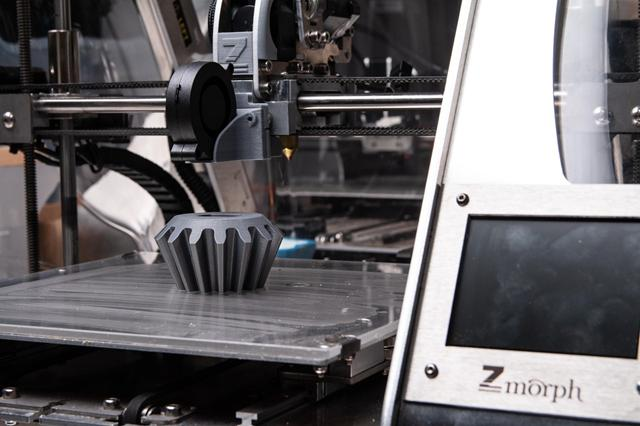
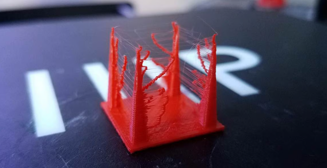
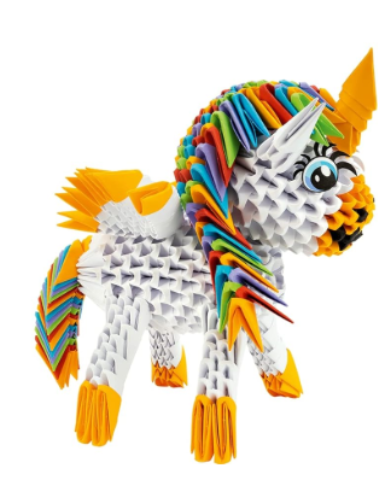
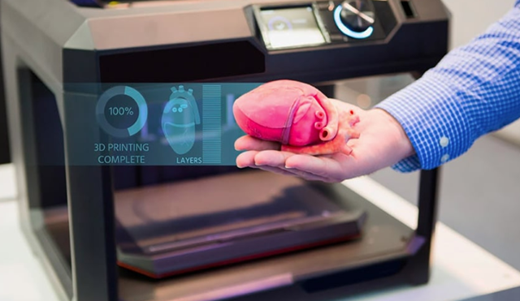
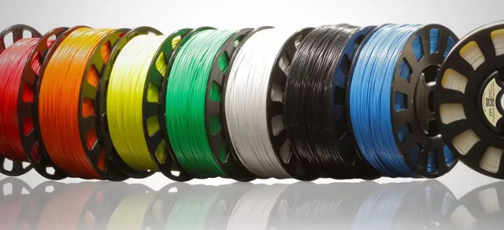

Qué es la impresión 3D y cómo está cambiando el mundo

La impresión 3D ha dejado de ser una tecnología futurista para convertirse en una herramienta cotidiana en industrias como la medicina, la arquitectura, la moda o la ingeniería. Gracias a su versatilidad, permite crear piezas personalizadas, reducir tiempos de producción y abaratar costes de forma nunca vista. En este artículo exploramos cómo está revolucionando diferentes sectores y por qué se ha convertido en una tecnología clave del presente.
Una pieza fallida de impresión con hilos desordenados o deformaciones.

Aunque la impresión 3D ofrece resultados sorprendentes, es habitual cometer errores al empezar: mala calibración, elección incorrecta de material, problemas de adhesión o temperaturas inadecuadas. En este post repasamos los fallos más comunes y te damos consejos prácticos para que tus impresiones salgan perfectas desde la primera capa.
Ideas creativas para imprimir en 3D en casa

¿Tienes una impresora 3D en casa y no sabes qué imprimir? Más allá de las figuras decorativas, existen proyectos útiles y divertidos que puedes crear tú mismo: soportes para cables, accesorios de cocina, organizadores, juegos educativos y hasta repuestos para el hogar. Te compartimos una lista de ideas originales para sacarle el máximo partido a tu impresora.
La impresión 3D en medicina: salvar vidas con tecnología

El sector sanitario es uno de los grandes beneficiados por la impresión 3D. Desde prótesis personalizadas hasta modelos anatómicos para planificar cirugías, esta tecnología está ayudando a mejorar la calidad de vida de miles de pacientes. Te contamos casos reales y los avances que se están logrando en hospitales y centros de investigación de todo el mundo.
Materiales para impresión 3D: guía práctica para elegir el mejor

Elegir el material adecuado puede marcar la diferencia entre un resultado mediocre y una pieza de calidad. PLA, ABS, PETG, TPU, resinas… cada uno tiene ventajas, desventajas y aplicaciones específicas. En este artículo te explicamos de forma sencilla las características de los principales materiales y cómo escoger el más adecuado según tu proyecto.